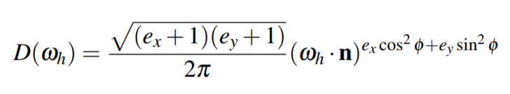
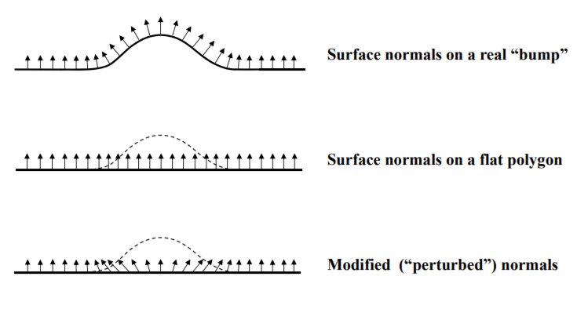
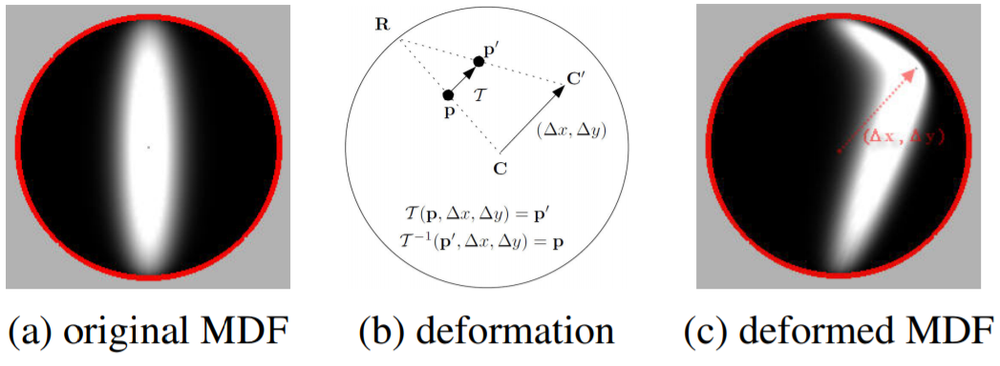

MDF Model of Normal Mapped Anisotropic Surface
Model created using the MDF of a Normal Mapped Surface
This describes the model proposed by Young-Min Kang, Hwan-Gue Cho and Sung-Soo Kim in a 2011 publication.
This model presents an effective method to render metals with small scratches more realistically. Anisotropic models are widely used to render scratched metals, however the use of these models alongside normal mapping is not often considered, and combining the two produces unrealistic results. Kang et al. propose an alternative method to overcome this problem and show more realistic light scattering of the scratches, particularly for specular reflection.
The Microfacet Distribution Function (MDF)
The following MDF for anistropic reflectance was originally proposed by Ashikhmin. MDF is denoted by D(Wh), and is defined as the probability that a microfacet is oriented in the direction wh.

- n - normal vector at the point to be rendered
- wh - halfway vector between the incident light direction and the outgoing viewing direction
- ex, ey - parameters that control the anistropy of reflection (meaning corresponds to
 and
and  in Ward's model)
in Ward's model)
- phi - azimuthal angle
However, the main issue with this MDF is that when used with normal mapping, the anisotropic reflectance on the surface is not captured well, and this method is not capable of realistically rendering small scratches in metals in close viewing. Therefore, Kang et al. proposed a solution to this by providing a deformed MDF that could solve this problem, and ensures a more accurate rendering of anistropic surfaces.
Perturbed Normals
To understand this solution, we must first understand the concept of perturbed normals. Given a surface with direction vectors u and v, a normal vector at point (u, v) can be perturbed in either the u direction or the v direction, or both. This is done by adding small changes Δu and Δv to the vector, where Δu and Δv are derived mathematically from the slope of the bump. A visual example of the outcome of perturbing a vector is found below.

Figure 1: Visual representation of perturbed normals.
MDF Deformation
The MDF is deformed using the perturbation of the normal.
- Let the deformed MDF be denoted by D'(wh).
- Let the normal vector perturbation amount in tangent space be (Δx, Δy).

Figure 2: .
The deformation of the MDF is seen in FIgure 2.
Since the MDF is being deformed, any point p, in the domain of the original MDF, must have a corresponding p' in the domain of the newly defined MDF. This transformation from p to p' is determined by the perturbation of the normal vector. Let us denote a transformation from p to p' as T(p, Δx, Δy).Scratch Map Generation
Metal scratches are expressed with perturbed normal vectors, and we represent the metallic appearance by engraving small scratches onto the material. The scratch map generation method that Kang et al. uses was created by first engraving a hemisphere into a surface. By using this basic hemisphere, also known as a pit, we can apply transformations to them in order to create scratch maps. For example, increasing the depth of the engraved pit or scaling or stretching the hemisphere by any size in any direction. By increasing the number of these pits, we can generate a scratch map that contains either randomly directly scratches, or scratches in a specific direction, which is useful in the rendering of materials such as brushed metal.
Experiment Outcomes
In the original paper, he utilised OpenGL to render scratched metals using his deformed MDF. Figure 9/12 shows the difference between rendering techniques using normal maps and using normal maps with an MDF deformation. You can observe more realistic light scattering along the rim of the specular reflection area using the deformed MDF, as it is better suited for anisotropic surfaces, and you can also see that the way in which light is scattered in simple normal mappings is not plausible.
Conclusions:
- The deformed MDF shows more detailed and realistic rendering quality in comparison with the simple normal mapping approach.
- This method is good for rendering metallic surfaces with scratches on a close scale.
- The computational cost is small enough to render these materials in real-time, and the method also does not require any measured data.
References:
[1] Y. M. Kang, H. G. Cho, S. S. Kim, "Plausible and Realtime Rendering of Scratched Metal by Deforming MDF of Normal Mapped Anisotropic Surface," Journal of WSCG, vol 19, issue 1, pp.101-110, 2011.
[2] J. Clevenger "Bump Mapping", California State University, Sacramento.